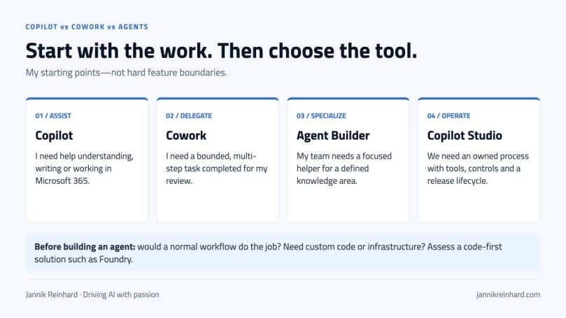
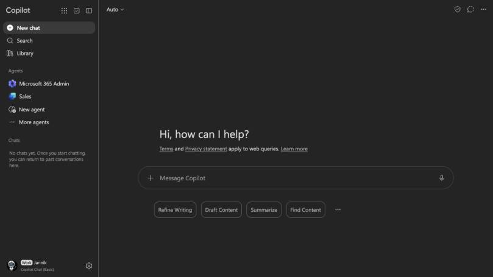
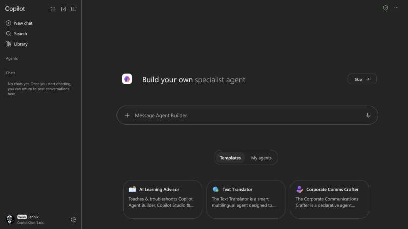
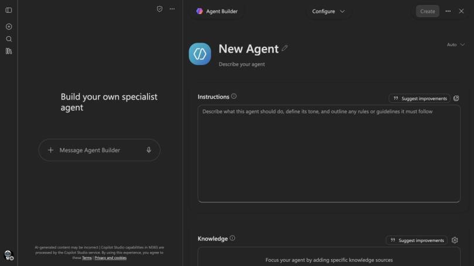
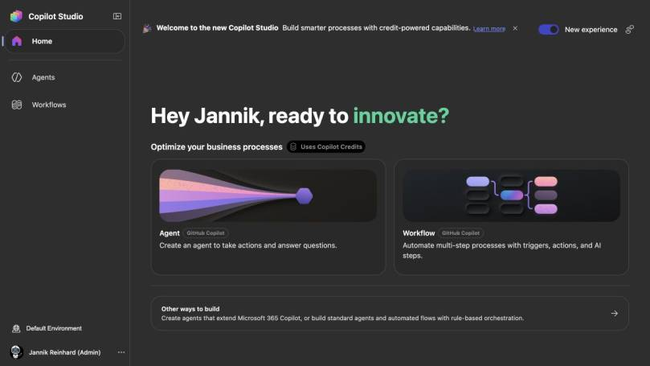
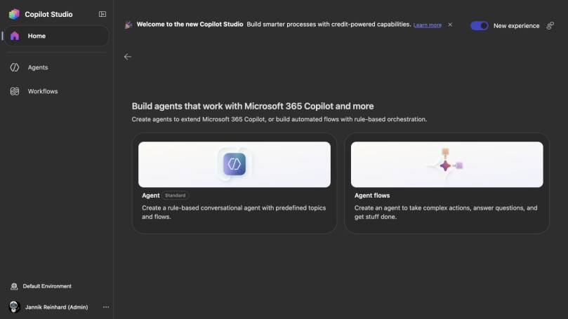
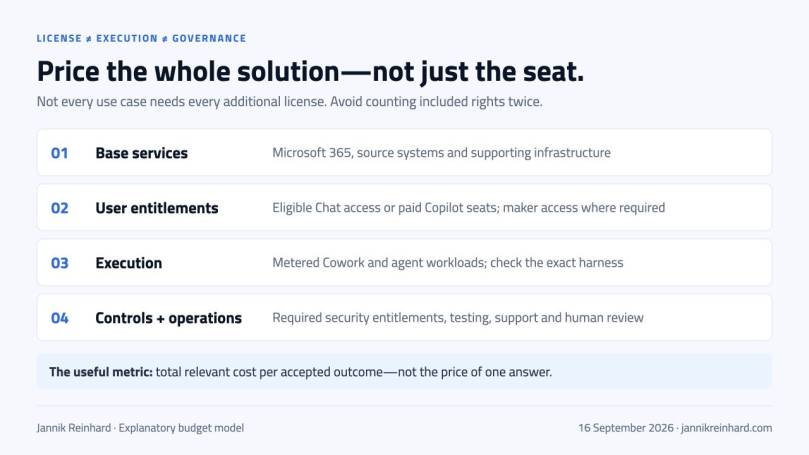

You want AI to prepare a rollout meeting. Should you ask Copilot, delegate the work to Cowork, or build an agent?
All three might help. But you would be buying, operating and governing three different things. One approach may need only a prompt. Another needs a consumption budget. A third becomes a service that somebody has to maintain.
In this Copilot vs Cowork vs agents guide, I explain how I would make that decision. We will look at each option, its licenses and charges, and the governance boundaries. I also walk through the new Copilot Studio interface with real product screenshots.
Scope and date: commercial Microsoft 365, checked on 16 September 2026. This is not a comparison with consumer Copilot, Claude Cowork or the GitHub coding subscription. Prices below are US public list prices, excluding tax, base subscriptions and contractual discounts. Availability varies by region, cloud, license and rollout.
Copilot vs Cowork vs agents: the short answer
My starting point is the job, not the product name.
| What I need | Where I would start | What I still own |
|---|---|---|
| Help writing, summarizing or understanding something | Copilot Chat; licensed Microsoft 365 Copilot when broader work context and app capabilities matter | The prompt, source selection and review |
| A finished piece of work involving several steps and files | Copilot Cowork | The scope, permissions, spending and final acceptance |
| A reusable specialist for a defined knowledge area | Agent Builder | Instructions, knowledge quality, access and ownership |
| A shared process with tools, approvals, channels and a release lifecycle | Copilot Studio | Design, tests, access, monitoring and support |
| Custom code, orchestration or infrastructure requirements | A code-first solution, potentially Microsoft Foundry | Engineering and the full operational lifecycle |
| A known sequence of rules and API calls | A conventional workflow | Reliable execution, retries and exception handling |
These are starting points, not hard product boundaries. Copilot can use agents. Cowork is itself an agentic experience. Studio agents can appear inside Copilot. A workflow can call an AI step without becoming an open-ended agent.
The useful distinction is who directs the work, how much freedom the system has, and who operates it afterwards.
{kind=link}

My selection guide. This is an explanatory diagram, not a product screenshot.
What do the different options actually do?
Copilot Chat and licensed Microsoft 365 Copilot
Copilot Chat gives eligible Microsoft 365 users an enterprise AI chat at no additional charge. Web information and files supplied or referenced in the conversation can be useful without a paid Copilot seat. Supported Outlook experiences can also ground answers in a bounded set of work content. It is no longer accurate to say “free means web only.”
The licensed offering adds broader work-grounded assistance and Copilot capabilities across Microsoft 365 apps. I would assess that against the employee’s real work: finding the relevant conversation, understanding a meeting, preparing a document or working inside Excel. Copilot Chat and the licensed experience
{kind=link}

Live Copilot Chat in the demo account, captured on 15 September. The Basic label describes this account, not every account in the tenant.
My recommendation: start with three representative tasks. If somebody only needs occasional help rewriting text they already have, that is a different purchasing case from someone who spends their day working across meetings, email and documents.
Also look at an existing Microsoft agent before building another one. Researcher and Analyst, for example, may already cover the intended job. Check the entitlement for the exact capability rather than assuming every agent is included in every plan.
Copilot Cowork: delegate a result, not just the next answer
Cowork is designed for longer tasks across Microsoft 365. It can gather context, work through steps, produce files and take supported actions. The user can steer the work and review the result. Microsoft made the commercial offering generally available in June 2026; its consumption is metered on top of the required Copilot license. Cowork availability and billing announcement
Here is the kind of task I would consider:
Prepare tomorrow’s application-rollout review from the approved status files and project documents. Create a short briefing with deployment status, unresolved risks and the decisions we need. Cite the source and date for each figure. Save a draft; do not send messages or change deployments.
That is more useful than “help with my rollout.” It defines an output and tells the system where to stop.
Cowork is not limited to one-off tasks. Its documented capabilities include recurring and event-triggered automations, reusable skills and plugins. The difference from a shared business service is therefore not simply whether it can run on a schedule. I would distinguish a person’s delegated routine from a process that needs a team owner, a support commitment and controlled releases. Using Cowork
In an enabled account, the documented entry point is the Cowork toggle beside Chat. The prerequisites include a Microsoft 365 Copilot license, enabled access and usage billing. Getting started with Cowork
Screenshot boundary: Cowork was not visible in the demo account used for this article. I have not substituted a documentation screenshot or a generated screen. The Cowork sections describe Microsoft’s documented behavior, not a paid task I ran in that account.
Agent Builder: give a specialist a defined job
Agent Builder is a useful starting point when the repeated task is “answer these questions using this knowledge and these instructions.” You build within the Microsoft 365 experience rather than starting a separate application project. Agent Builder overview
{kind=link}

Live Agent Builder, captured on 16 September. No prompt was submitted and no agent was created.
A sensible first example would be an onboarding helper restricted to approved workplace guidance. Give it a clear source set, tell it to cite the relevant policy, and define what to do when the policy does not answer the question.
{kind=link}

The configuration view after selecting Skip. The empty form shows the distinction between instructions and knowledge; it is not a deployed agent.
For declarative agents, Microsoft’s Copilot runtime supplies the orchestration. A custom-engine agent can bring its own orchestration and models. That is a technical distinction, not a promise that one approach is automatically more capable or secure. Microsoft’s agent architecture overview
I would move beyond a lightweight knowledge helper when the job needs richer integrations, controlled actions, more channels or an operational lifecycle. Microsoft supports copying suitable Agent Builder agents into Studio, but that is not the same as universal, lossless conversion between every runtime. Agent Builder and Studio comparison
What changed in the new Copilot Studio experience?
The new interface is not just a visual refresh. You need to know which harness powers what you build. A harness is the runtime that coordinates the model, tools and execution.
{kind=link}

Live Studio home, captured on 15 September. Notice the runtime labels and the credit notice, not only the New experience switch.
Microsoft currently documents three harnesses:
| Harness | Intended emphasis | Publishing scope in Microsoft’s comparison |
|---|---|---|
| GitHub Copilot | Longer, reasoning-heavy tasks across tools and files; skills and memory | Internal teams or external customers |
| Standard | Authored topics, rules and structured conversations or agent flows | Internal teams or external customers |
| Copilot chat | Extending Microsoft 365 Copilot with organizational knowledge | Internal teams |
These choices affect capabilities and billing. “GitHub Copilot” on the Studio card identifies the harness; this is not a recommendation to buy a coding subscription for each business user. Also, structured paths do not make every generative step deterministic. Copilot Studio harnesses
The Other ways to build entry exposes the Standard agent and Agent flows choices in this tenant:
{kind=link}

Live Studio navigation. The Standard option remains available alongside the new entry point.
Pay attention to the labels here: a Workflow on the GitHub Copilot harness and a Standard Agent flow do not inherit the same billing model. A separate Power Automate cloud flow uses Power Automate licensing, not the agent-flow Copilot Credit meter. A visual workflow canvas alone does not tell you which entitlement you need. Billing scope and flow distinction
How I would approach a new Studio project
- Select the runtime deliberately. Write down the reason before building: a controlled conversation, a knowledge extension or a longer tool-driven task.
- Define the output and limits. “Create a draft change request” is a much safer initial scope than “manage our devices.”
- Add only the required knowledge and tools. Separate read tools from write tools. A convenient broad connector is not automatically the right permission boundary.
- Build a small evaluation set. Include normal requests, missing information, denied access and tool failures.
- Test the actual channel. A maker’s successful preview is not proof that the intended end user has the right permissions or that every channel behaves identically.
- Release to a small group and measure outcomes. Monitor both failed work and expensive work, including tasks that technically completed but needed correction.
Those are my recommended implementation steps, not a claim that this walkthrough created and evaluated a production agent. In the available Studio account, the environment picker did not expose an existing agent environment to inspect. The screenshots therefore show the real entry points, not fabricated evaluation results.
Microsoft still marks specific capabilities, including natural-language building, as preview in its current overview. A generally available platform does not make every feature generally available. Validate the required feature, channel, region and support terms before committing. Copilot Studio overview
Licenses and costs: separate seats from execution
The mistake I would avoid is asking only, “How much is Copilot?” There are several different cost layers.
{kind=link}

Budget model, not a Microsoft licensing diagram. Not every scenario needs every additional license.
The commercial building blocks
| Item | Public price or charging model | What to check |
|---|---|---|
| Microsoft 365 Copilot Chat | No additional charge with an eligible Microsoft 365 subscription | Metered agent capabilities are a separate question |
| Microsoft 365 Copilot, enterprise offer | $30/user/month, paid yearly | Qualifying base subscription required; do not confuse annual billing with a cancel-anytime monthly plan |
| Copilot Cowork | Required Copilot license plus Copilot Credits | Access and spending configuration; no flat “unlimited Cowork” assumption |
| Copilot Studio capacity pack | $200/pack/month for 25,000 credits | Tenant capacity, not a per-agent or per-maker price |
| Copilot Credits PAYG | $0.01/credit | Azure billing, eligible services and actual consumption |
| Copilot Credit Pre-Purchase Plan | Commitment-based pricing | Commitment term, utilization and overage route |
| Agent 365 | $15/user/month standalone; also included in E7 | Governance entitlement, not execution capacity |
| Microsoft 365 E7 | $99/user/month, paid yearly for the displayed US enterprise offer | Compare the full bundle with existing entitlements; it is not simply an extra $99 Copilot add-on |
Price references: Copilot enterprise, Studio, Copilot Credits licensing guidance, Agent 365 and Microsoft 365 enterprise plans.
Regional currency, Teams variants, business offers, taxes, reseller terms and negotiated agreements can change your quote. I would check the organization’s actual agreement before treating this table as a purchasing decision.
When is agent usage included with a Copilot seat?
The included rights are not a blanket exemption for everything called an agent. Microsoft’s current pricing distinguishes Copilot chat and Standard harness usage from the GitHub Copilot harness, which requires credits. Studio licensing options
For Standard agents, the billing documentation ties the employee-facing inclusion to a licensed, authenticated Microsoft 365 Copilot user and that user’s identity. Fair-use conditions apply. Agent flows have a narrower condition: the inclusion applies to the When an agent calls the flow trigger in that licensed-user context. Other triggers consume credits. Computer-using agent usage is not covered by that inclusion. Standard-harness billing conditions
A nightly event-triggered job therefore needs a separate licensing check, even if its maker has a Copilot seat. The same applies to external audiences and employees without that seat. The maker’s license is not a license for every future caller.
Microsoft’s Standard-harness licensing documentation also distinguishes tenant entitlement, maker access and end-user access. A person using the agent does not automatically need the maker license. Studio licensing requirements
A credit is not a message, token or completed task
For Standard-harness billing, selected current rates are:
| Meter | Credits |
|---|---|
| Classic answer | 1 |
| Generative answer | 2 |
| Agent action | 5 |
| Tenant Graph grounding | 10 |
| Agent flow actions | 13 per 100 actions |
One interaction can trigger several meters. Reasoning, other tools and separately billed model configurations can add cost. This is a selected rate card, not the complete tariff. Standard-harness rates
The GitHub Copilot harness uses a different consumption model: tokens, tools and the harness contribute to cost. Natural-language creation, preview, testing and evaluation generation can consume credits before publication. Do not estimate it using the Standard table or assume the prototype phase is free. New-harness billing
For Cowork, model choice, retrieved context, tools and runtime matter. The public launch pricing lists PAYG at $0.01 per credit, with commitment options. A longer task can require multiple model and tool calls; one submitted prompt is not one fixed-price operation. Cowork consumption model
Three cost examples—with the assumptions visible
These are illustrative calculations, not benchmark measurements or tenant invoices.
1. Fifty licensed employees. At the displayed enterprise list price, 50 × $30 is $1,500 per month equivalent, or $18,000 for a year of Copilot seats. Their base Microsoft 365 subscriptions are separate. Add consumption only for the workloads that actually require it; do not count included usage twice.
2. A Standard agent serving metered users. Assume 10,000 interactions, each with exactly one generative answer and one agent action, with no other billable features. That is 10,000 × (2 + 5) = 70,000 credits. At PAYG it is $700. Three fully applicable monthly packs provide 75,000 credits for $600, leaving 5,000 unused. This arithmetic is not a guarantee about your agent’s trace or the best purchasing plan. Rates and licensing basis
3. A Cowork pilot. Assume 20 people each run 10 tasks per month, averaging 250 credits per task solely for this example. That would be 50,000 credits, or $500 PAYG, in addition to their required seats. If the average doubles, the consumption cost doubles. Replace the assumed average with representative pilot measurements before budgeting.
Cowork’s /cost command provides a session and usage view; I would use that for user feedback, then reconcile reporting with the billing view. It is not a substitute for an invoice or a detailed attribution model. Cowork cost reporting
Budget for the parts outside the meter
My budget would include source-system licenses, external APIs, model or search services, storage, logging, connectors where separately licensed, support and human review. A connector being available in Studio does not pay the subscription of the system behind it.
For a fair comparison, I would measure:
Cost per accepted outcome = all relevant execution and operating costs ÷ outcomes that meet the agreed quality and control criteria.
A cheap response that requires a person to redo the work is not necessarily the cheaper solution. Track retries, corrections, time to completion and the human minutes still needed.
Governance: similar screens do not mean identical controls
I would treat the following as a design review, not as a checklist that a product logo automatically satisfies.
Identity and authorization: whose permissions are being used?
Write down the identity for every tool. Is it the person asking, a maker’s connection, an application identity or a separately governed agent identity?
A user-scoped design and an application-scoped design have very different failure modes. An agent must not become a convenient route to data the caller should not see. For actions, authorization must hold at the API or service boundary, not only in an instruction saying “do not do this.”
For Studio, Microsoft documents controls across environments, roles, tool authentication and administration. Verify how those controls apply to the selected harness and channel. Studio security and governance
In an Intune scenario I would begin with read access to the minimum reporting scope. Adding the ability to change assignments, retire devices or run remediation is a separate security decision—not the next harmless checkbox.
Data access, DLP and Purview are different layers
First fix the source permissions. An AI assistant can make an existing oversharing problem easier to exploit; it cannot decide that a widely shared document should secretly have been restricted.
Then distinguish two types of control:
- Power Platform data policies govern connector combinations, endpoints and supported capabilities. They can restrict unauthenticated chat, HTTP, knowledge sources, channels and other paths. Connector-backed MCP tools are not outside this review. Studio data policies
- Purview controls concern information protection, audit, retention and supported AI interactions. The exact feature and surface matter; a connector policy is not the same as inspecting sensitive information in a generated answer.
There is a particularly important Cowork caveat. Microsoft’s current Cowork-specific Purview matrix lists auditing, labels, encryption, eDiscovery and lifecycle capabilities as supported, but marks DLP and data classification as unsupported for those AI interactions. That does not mean every existing Microsoft 365, browser or endpoint data-protection control disappears. It means you must not claim full Copilot/Purview feature parity for Cowork. Cowork Purview support matrix
If a required control is missing for the intended path, narrow the use case or do not enable it. “We own the license” is not a substitute.
Models, processing location and retention
Model choice is also a data-processing decision. Record the exact model, provider arrangement, region commitments and retention terms—not just the word “Copilot.”
For example, Microsoft’s Anthropic documentation distinguishes subprocessor offerings from optional Data Retention offerings with different terms. It also documents user/group controls and geography-specific enablement. Do not generalize one model’s arrangement to the whole family. Anthropic provider settings
Likewise, Microsoft distinguishes Microsoft-operated Azure OpenAI from OpenAI-operated subprocessor experiences. Review the documented residency exclusions and service-specific conditions. “It is in our Microsoft subscription” does not establish that every model call uses the same hosting path. OpenAI subprocessor guidance
Temporary task storage and retained business records are separate issues. Cowork’s Purview guidance describes transcripts and artifacts in Microsoft 365 retention surfaces. A temporary execution workspace being cleaned up does not mean that all resulting content has vanished. Cowork records and retention
My default would be read-only tools first. For write actions, define which actions need approval and what the reviewer sees: exact target, proposed change and likely impact.
Cowork’s documented controls include browsing restrictions and site policies. Browser use can involve the user’s signed-in session. Approvals and pre-authorized actions also matter: do not assume the user will always approve every action individually. Cowork administration
Treat content from documents, websites, emails and tool responses as untrusted input. A retrieved page asking the agent to send a file somewhere is not an instruction from the user. I would test that case deliberately, including a malicious instruction embedded in an otherwise relevant document.
For a device-management change, a good proposal still needs the normal change authority. Afterwards, verify the result in Intune or the target system. “The agent says it applied the change” is not endpoint evidence.
Spending policies are also access policies
For Cowork, the current admin guidance says access follows the relevant spending policy. A one-credit limit is not a reliable way to deny access, and the old preview entry under All Agents is not the current access switch. Cowork access governance
In Microsoft 365 Copilot → Cost Management → Configuration, review the users, groups, services and limits together. Watch two documented details:
- Auto-applying newly added services can broaden what an existing policy enables.
- Overlapping policies do not simply resolve to the smallest limit. The documented selection prefers the higher per-user limit, then higher overall limit, then the newer policy.
Do not treat separate policy limits or capacity allocations as a single guaranteed organization-wide ceiling. Verify the actual enforcement and overage behavior of each billing route. Credit and spending-policy management
Lifecycle, monitoring and Agent 365
Every shared agent needs a named owner and backup, approved sources, a change history and a way to stop it. I would separate development, testing and production where the platform supports the required lifecycle, with controlled promotion and connection configuration. Studio lifecycle governance guidance
Monitor more than adoption. Capture task success, inappropriate access attempts, tool failures, unexpected actions, latency, consumption and user corrections. Keep sensitive prompt data out of broad-access logs unless you have a justified collection and retention policy.
Agent 365 adds a governance and management layer; it is not another agent builder or a pool of inference credits. Its standalone price is per user, not $15 for every agent. Check the licensing scope for people who manage, sponsor or use agents, and verify which agents are onboarded and which controls apply. Agent 365 availability and licensing
An E7 or Agent 365 purchase does not configure the controls for you. Neither should it be assumed to make Cowork or new-harness execution unlimited.
When to use what: one Intune example, five approaches
Imagine an application rollout is stuck. Some devices have not checked in, others show installation failures, and the project owner needs an update.
Copilot: I would use it to understand an approved status export or help draft a clear explanation of known issues. The human still drives the investigation and decides which evidence is relevant.
Cowork: I would consider delegating the review pack: gather approved project material, compare dated exports, prepare a briefing and draft follow-ups. Scope it to preparation first. Access to Microsoft 365 documents does not automatically grant permission to operate Intune.
Agent Builder: I would use a knowledge specialist for repeated questions about the organization’s rollout policy, exception process and support guidance. I would not pretend that a policy answer proves a device’s current state.
Copilot Studio: I would consider a supported team service that retrieves current reporting through an approved integration, explains failures and drafts a change request. It needs caller authorization, reliable tools, escalation, approvals and verification. The harness should follow those requirements rather than whichever creation card is most prominent.
A normal workflow: If the requirement is “when an approved request reaches this state, create a ticket and notify the owner,” I would first consider a conventional workflow. A clear rule does not need an LLM to rediscover it on every run.
These are proposed designs, not out-of-the-box promises or demos executed for this article. The point is to keep the level of automation proportionate to the job and its risk.
Where Microsoft Foundry fits
I would assess a code-first approach when the requirements include custom orchestration, deeper application integration, specific networking, model control or a development workflow that fits the engineering team better.
That does not make Foundry automatically cheaper or Studio automatically easier. Engineering time, operations, evaluation and support all belong in the comparison. A mixed design may also make sense: a user-facing Microsoft 365 entry point with a controlled backend service.
I cover that separate platform decision in Microsoft Foundry vs Copilot Studio. Recheck current harness-specific capabilities alongside that article; the platform is moving quickly.
How I would run the first rollout
I would start with a small pilot and explicit acceptance criteria, not a tenant-wide enablement announcement.
First: establish the boundary
Choose one task, the intended users and the data classification. Name the owner, approver and support contact. Specify what the system may read, what it may change and which actions always require a person.
Confirm the exact license, harness, channel, provider settings, environment and billing route. Record whether any required capability is in preview. Set the funding and alerting before enabling repeated work.
Then: test the uncomfortable cases
My minimum evaluation set would include:
- A straightforward request with a known correct result.
- An answer that is absent from the approved sources.
- A source that changed since the previous run.
- A user whose access has been revoked.
- A malicious instruction inside a retrieved document.
- A tool timeout, rate limit and partial failure.
- The same event arriving twice.
- An expensive or looping task that needs to stop.
- An action requiring approval and a rejected approval.
- A successful API response where the final business outcome still needs verification.
For each case, record the expected outcome before testing. Otherwise it is too easy to explain away a convincing but wrong result after the fact.
Finally: decide whether to expand
Review accepted outcomes, human correction time, failed actions, evidence quality and cost. Compare the pilot with the existing way of doing the job.
I would expand only when the benefit survives that comparison and the support model is clear. If the best solution is still a simple workflow plus a helpful Copilot prompt, that is a good result.
Frequently asked questions
Is Copilot Cowork included in the $30 Copilot price?
The license is a prerequisite, but Cowork usage is metered. Budget its consumption separately and check the organization’s eligible funding route. The pricing table explicitly labels Cowork as metered.
Do I need Copilot Studio to use Cowork?
Cowork is a user-facing Microsoft 365 experience; you do not need to build a Studio agent to delegate a task to it. The required access, license and billing setup still apply. Studio is relevant when you are building and operating your own solution.
Does every person using an agent need a $30 Copilot seat?
No single rule covers every scenario. Metered Studio agents can serve audiences without a Copilot seat. Included employee usage has specific conditions, and external channels, autonomous triggers and different harnesses need separate checks.
Does the new Studio interface replace all Standard agents?
The interface exposes several approaches. Microsoft documents Standard, Copilot chat and GitHub Copilot harnesses separately. Review an existing agent’s actual capabilities and migration path; do not rebuild it merely because the home page changed.
Can I use one security checklist for all of them?
You can use common questions, but not assume identical answers. Identity, data access, model processing, Purview support, approvals and billing controls must be checked for the specific execution path.
My recommendation
I would not turn this into a contest over which option is the most “agentic.”
Use Copilot when someone needs assistance in their work. Consider Cowork when they want to delegate a bounded task with a result they can review. Build a specialist or shared agent when the job needs a reusable service with a clear owner. Keep fixed rules in a workflow when that is enough.
Then check the three things that are easy to miss in a demo: whose permissions it uses, what it costs to complete the job, and how you know the result is correct.
Stay healthy, Cheers Jannik